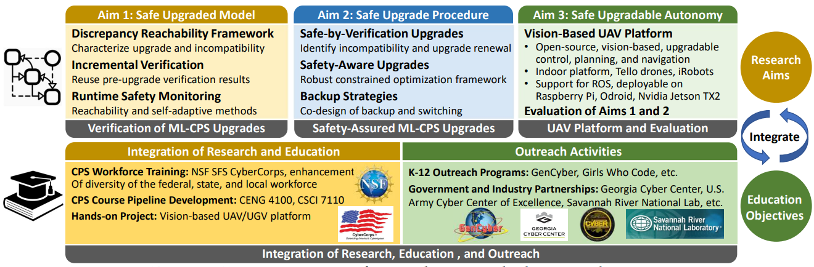
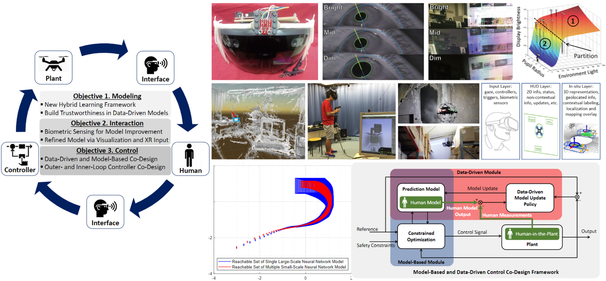
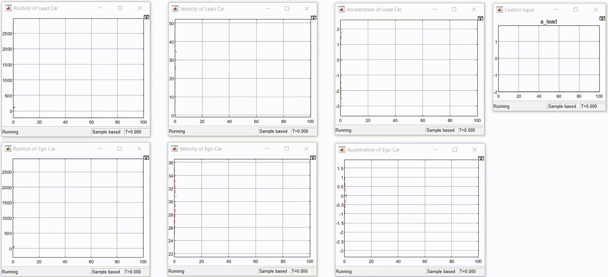
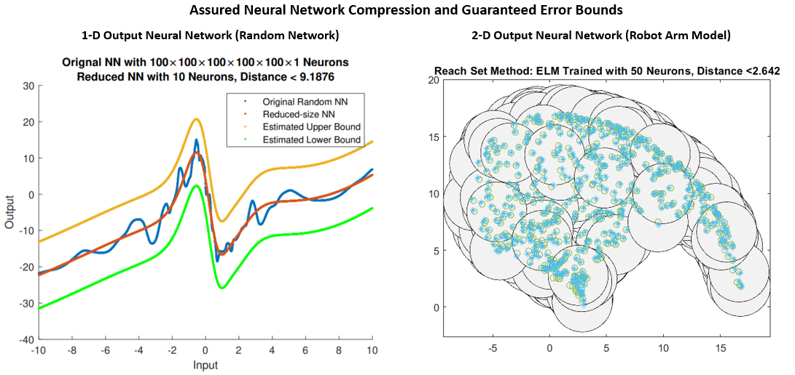

Projects
Enabling Trustworthy Upgrades of Machine-Learning Intensive Cyber-Physical Systems (NSF CAREER Award 2143351)
This project is supported by NSF CAREER Award 2143351.
|  |
Project Overview of NSF CAREER Award 2143351.
Cyber-Physical Systems (CPS) sustainably benefit from software upgrades throughout their life cycles. However, as CPS become machine-learning-intensive due to rapidly increasing interactions between CPS and machine learning technologies, two major distinguishing factors associated with machine learning techniques raise significant safety concerns about CPS upgrades which play a critical role in enabling lifetime safety assurance. First, upgrades of machine learning components, which inherently result in system changes, come at significant safety risk for safety-critical CPS due to the vulnerabilities of machine learning techniques. Second, the traditional safe-by-verification upgrade framework, in which upgrades and verification have to be two separate procedures, is no longer valid for machine learning processes that update instantaneously during system operations.
This project targets these unique challenges by developing scalable verification and monitoring methods for upgrades as well as safe upgrade procedures to enable trustworthy upgrades and achieve lifetime safety assurance in machine-learning-intensive CPS. This project will advance the state-of-the-art in the research of safety in machine-learning-intensive CPS from local time windows to global life cycles. With the expected research results, machine learning components in CPS can upgrade with desired safety assurance for lifetime safety purposes. In particular, this project will develop a novel scalable incremental verification framework as well as self-adaptive runtime monitoring methods for upgrades of machine-learning-intensive CPS. The proposed approach will also design safety-assured upgrade procedures by developing novel upgrade renewal procedures, safety-aware upgrades, and safety backup co-design methods.
Data-Driven Modeling and Control of Human-Cyber-Physical Systems with Extended-Reality-Assisted Interfaces (NSF CPS Award 2223035)
This project is supported by NSF CPS Award 2223035, and in collaboration with Prof. Jason Orlosky.
|  |
Project Overview of NSF CPS Award 2223035
Human-cyber-physical systems (h-CPS) are interactive engineered systems that collaborate or interact with one or more human beings to leverage the complementary strengths of both human and autonomy technologies. Medical devices, robot assistive systems, teleoperation, semi-autonomous systems, and other technology-assisted applications are all examples of h-CPS. Because human operations are deeply intertwined with cyber and physical processes in h-CPS, new technical challenges for h-CPS analysis and design emerge, particularly in modeling complex human behaviors, enabling effective human-machine interactions, and developing reliable and high-performance controllers. Furthermore, as envisioned in future h-CPS subject to a large amount of data of adequate quality and quantity available from rich sensing modalities, modeling, interaction, and control procedures are shifting from model-based to data-driven, and new challenges such as trustworthiness and learning efficiency of data-driven methods are expected to arise.
This project will enable the synergistic integration of data-driven modeling and control methods such as neural networks, reinforcement learning, and model-based methods such as hybrid systems, and model predictive control. This project will also explore the benefits of extended reality (XR) in building human-machine interfaces for effective communication and interaction between human users, machines, and environments. Specifically, the research activities in this project will lead to new discoveries of h-CPS in that: (1) a new hybrid learning architecture will be developed for data-driven modeling of human behaviors to accurately capture both human maneuver dynamics and human decision-making processes, (2) XR-assisted interfaces will be developed to interact with semi-or fully-autonomous systems to enhance control capability and performance, and (3) a model-based and data-driven control co-design framework will be developed to enable adaptable and reliable control in human-in-the-plant scenarios, and a co-design framework of outer-loop and inner-loop controllers will be developed to assist human users to augment human control capability. Validation experiments will be conducted using h-CPS testbeds with XR interfaces, such as eye-tracking, gaze-based control, and 3D drone teleoperation systems.
Analysis and Control of Hybrid Dynamical Systems
A hybrid system is a dynamical system that exhibits both continuous and discrete dynamic behavior, a system that can both flow (described by a differential equation) and jump (described by a state machine or automaton). The hybrid system framework offers an elegant way to model complex many technological systems, in which logic decision making and embedded control actions are combined with continuous physical processes such as a variety of Cyber-Physical Systems (CPS), e.g., collision avoidance protocols in air traffic control, obstacle avoidance algorithms, software-controlled medical devices, etc.
I am personally interested in the development of new theoretical results for the analysis and control of hybrid systems. My recent work proposed novel stability criteria for hybrid systems with time-dependent switching in the framework of multiple Lyapunov functions, including non-conservative stability criteria, formulated in terms of LP, SDP, and SOS conditions.
The results are further developed to a variety of hybrid systems such as stochastic switching systems, positive hybrid systems, uncertain hybrid systems, etc, as well as control synthesis of hybrid systems, e.g., event-triggered control.
 |
Figures are from Automatica (2014), Automatica (2018).
Verification of Neural Network Systems
Artificial neural networks are used in systems that introduce machine learning components to resolve complex neural networks problems. This can be attributed to the impressive ability to approximate complex functions as shown by the Universal Approximation Theorem. However, the data-driven nature and lack of efficient methods for the analysis of neural networks leads to, in most cases, the treatment of neural networks as black boxes with no assurance in safety. Verifying neural networks is a difficult problem, and it has been demonstrated that validating even simple properties about their behavior is NP-complete. I am personally interested in developing verification algorithms in the framework of reachability of neural networks. The developed set-valued reachability framework aims to compute the output set of a neural network, then system properties such as safety property can be verified by checking the relationship, e.g., intersection, between output set and specification set.
 |
The figure is from IEEE Design and Test (2020).
I am developing efficient and scalable reachability-based verification frameworks of neural networks. Simulation-guided methods incorporated with interval arithmetic are proposed for neural networks with general activation functions. Polyhedra computation framework is developed for neural networks with ReLU activation function.
 |
Figures are from IEEE TNNLS (2020) and CAV (2020).
Trustworthy Data-Driven Modeling and Control of Cyber-Physical Systems
Modern control systems, e.g., medical robotic systems, autonomous vehicles, and a variety of Cyber-Physical Systems (CPS), have been increasingly benefiting from the recent rapid development of Machine Learning (ML) and Artificial Intelligence (AI) techniques. In the foreseeable future, there will be intensive interactions between ML and dynamical control system domains in various stages of modeling, sensing, and control. Over the next decade, the biggest generator of data is expected to be devices that sense and control the physical world. Effective and trustworthy data-driven methods are required to meet and handle the explosion of data emerging from the physical world. Moreover, with the progress of adversarial machine learning, traditional methods dealing with uncertainties and disturbances such as robust control methods are no longer valid as long as the perturbations and attacks might be purposefully crafted by adversarial opponents rather than random noise. Thus, new assured ML methods and processes are required for the data-driven modeling and control processes of CPS to assure formal guarantees of desired properties.
I am personally interested in developing post-modeling and design verification methods as well as correct-by-design methods to achieve the trustworthiness of data-driven modeling and control of CPS.
 |
Figures are from Safe, Autonomous and Intelligent Vehicles (2019) and IEEE TNNLS (2020).
Run-Time Monitoring of Learning-Enabled Cyber-Physical Systems
To assure the safety property of neural networks, there are a few safety verification methods developed recently. These approaches are mostly designed in the framework of offline computation and usually represent high computational complexities and require huge computation resources to conduct safety verification. The developed methods are expected to be able to conduct scalable design-time verification for hybrid systems with learning-enabled components. One way to resolve the real-time challenge of run-time monitoring is to develop more computational efficient verification methods that can be executed sufficiently fast to satisfy the run-time requirement such as the specification-guide method and polyhedral set methods. However, these offline methods are essential with an open-loop computation structure and there always exist computational limitations for these offline algorithms implemented online. On the other hand, inspired by observer design techniques in classical control theory, another way is to design a closed-loop structure of run-time monitoring using the instantaneous measurement of the system.
|  |
The figure is for runtime safety monitoring of an adaptive cruise control system with a neural network feedback controller. Figures are from IEEE Transactions on Cybernetics (2021).
Assured Neural Network Compression
Model reduction is a plausible way to enhance scalability for model-based system design. The experimental results suggest systems with thousands of state variables can be reduced to systems with tens of state variables such that the order-reduction over-approximation error is small enough to prove or disprove formal properties of interest using reachability analysis tools. Given a large-scale neural network which is difficult for us to perform analysis and verification, the assured neural network compression provides a new neural network with a much smaller size as well as a guaranteed error distance to the original neural network, so that we can perform analysis and verification of properties on the new reduced-size neural network and map the results back to the original neural network with the desired degree of assurance.
I am personally interested in developing a bisimulation framework to characterize the bisimilarity between two neural networks and use the reachability-based framework to compute the bisimulation errors.
|  |